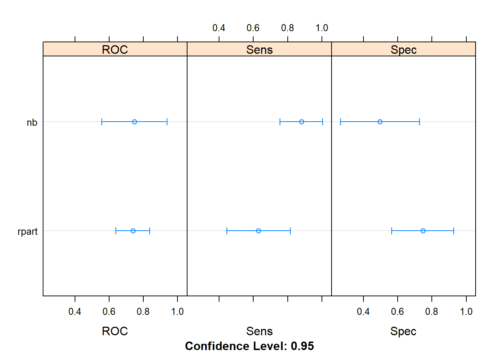
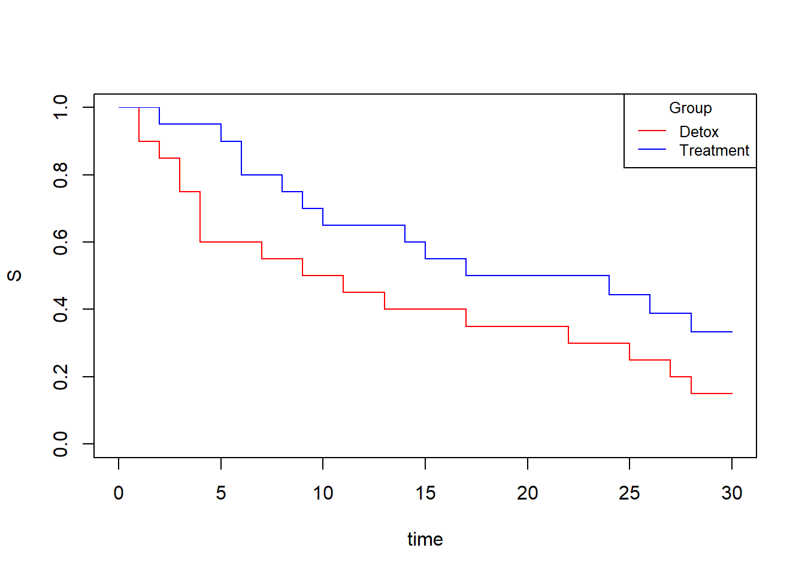

3.8 Assignment alcohol
2020-04-13
Exercise
The “alcohol.sav” database contains information about alcoholic patients who have finished their hospital treatment.
Explore the predictors of the time elapsed from the release of alcohol treatment to relapse.
Variables:
Weeks: the number of weeks until relapse or censoring
Event: 0-no relapse; 1-relapse
Group: group of treatment (0-detox only; 1-detox plus therapy)
Symptoms: level of psychological distress (ranging from 1-lowest to 5-highest)
AA: attending of Alcoholics Anonymous (AA) meetings (0-no; 1-yes)
all code from the professor
Open the file in spss.
## $ID
## [1] 1 2 3 4 5 6 7 8 9 10 11 12 13 14 15 16 17 18 19 20 21 22 23 24 25
## [26] 26 27 28 29 30 31 32 33 34 35 36 37 38 39 40
##
## $weeks
## [1] 1 1 2 3 4 4 27 7 9 11 13 25 17 3 22 4 28 30 30 30 2 5 6 6 8
## [26] 9 10 14 15 17 19 24 26 28 30 30 30 30 30 30
##
## $Event
## [1] 1 1 1 1 1 1 1 1 1 1 1 1 1 1 1 1 1 0 0 0 1 1 1 1 1 1 1 1 1 1 0 1 1 1 0 0 0 0
## [39] 0 0
##
## $Group
## [1] detox detox detox detox detox detox detox
## [8] detox detox detox detox detox detox detox
## [15] detox detox detox detox detox detox treatment
## [22] treatment treatment treatment treatment treatment treatment treatment
## [29] treatment treatment treatment treatment treatment treatment treatment
## [36] treatment treatment treatment treatment treatment
## Levels: detox treatment
##
## $symptoms
## [1] 4.1 3.2 3.0 3.2 4.0 2.5 1.5 3.8 4.5 1.8 3.2 2.5 3.3 3.0 2.5 3.0 1.2 1.8 1.0
## [20] 1.8 4.8 2.5 4.5 4.0 2.0 3.0 1.2 2.8 3.0 2.5 1.5 1.5 2.2 3.3 1.0 1.5 3.5 1.4
## [39] 2.0 1.5
##
## $AA
## [1] 0 0 0 0 0 0 1 0 1 0 1 0 0 0 1 0 1 1 1 0 0 0 0 0 0 0 0 0 0 1 1 0 0 0 1 0 0 1
## [39] 1 1
##
## attr(,"label.table")
## attr(,"label.table")$ID
## NULL
##
## attr(,"label.table")$weeks
## NULL
##
## attr(,"label.table")$Event
## NULL
##
## attr(,"label.table")$Group
## treatment detox
## "1" "0"
##
## attr(,"label.table")$symptoms
## NULL
##
## attr(,"label.table")$AA
## NULL
##
## attr(,"codepage")
## [1] 65001
## attr(,"variable.labels")
## named character(0)Create the survival object
## [1] 1 1 2 3 4 4 27 7 9 11 13 25 17 3 22 4 28 30+ 30+
## [20] 30+ 2 5 6 6 8 9 10 14 15 17 19+ 24 26 28 30+ 30+ 30+ 30+
## [39] 30+ 30+obtain the median of survival.
## Call: survfit(formula = Surv(data$weeks, data$Event) ~ 1)
##
## n events median 0.95LCL 0.95UCL
## 40.0 30.0 14.5 9.0 27.0obtain the survival in several points of time.
## Call: survfit(formula = Surv(data$weeks, data$Event) ~ 1)
##
## time n.risk n.event survival std.err lower 95% CI upper 95% CI
## 1 40 2 0.950 0.0345 0.885 1.000
## 2 38 2 0.900 0.0474 0.812 0.998
## 3 36 2 0.850 0.0565 0.746 0.968
## 4 34 3 0.775 0.0660 0.656 0.916
## 5 31 1 0.750 0.0685 0.627 0.897
## 6 30 2 0.700 0.0725 0.571 0.857
## 7 28 1 0.675 0.0741 0.544 0.837
## 8 27 1 0.650 0.0754 0.518 0.816
## 9 26 2 0.600 0.0775 0.466 0.773
## 10 24 1 0.575 0.0782 0.441 0.751
## 11 23 1 0.550 0.0787 0.416 0.728
## 13 22 1 0.525 0.0790 0.391 0.705
## 14 21 1 0.500 0.0791 0.367 0.682
## 15 20 1 0.475 0.0790 0.343 0.658
## 17 19 2 0.425 0.0782 0.296 0.609
## 22 16 1 0.398 0.0777 0.272 0.584
## 24 15 1 0.372 0.0769 0.248 0.558
## 25 14 1 0.345 0.0758 0.225 0.531
## 26 13 1 0.319 0.0745 0.202 0.504
## 27 12 1 0.292 0.0729 0.179 0.476
## 28 11 2 0.239 0.0686 0.136 0.420Plot survival curve with confidence intervals

produce the Kaplan-Meier curves and estimates according one factor (group of treatment)
KM_group <- survfit(Surv(data$weeks, data$Event)~1+data$Group)
# To obtain the median of survival according one factor (group of treatment).
KM_group## Call: survfit(formula = Surv(data$weeks, data$Event) ~ 1 + data$Group)
##
## n events median 0.95LCL 0.95UCL
## data$Group=detox 20 17 10.0 4 27
## data$Group=treatment 20 13 20.5 10 NAobtain the survival in several points of time according one factor (group of treatment).
## Call: survfit(formula = Surv(data$weeks, data$Event) ~ 1 + data$Group)
##
## data$Group=detox
## time n.risk n.event survival std.err lower 95% CI upper 95% CI
## 1 20 2 0.90 0.0671 0.7777 1.000
## 2 18 1 0.85 0.0798 0.7071 1.000
## 3 17 2 0.75 0.0968 0.5823 0.966
## 4 15 3 0.60 0.1095 0.4195 0.858
## 7 12 1 0.55 0.1112 0.3700 0.818
## 9 11 1 0.50 0.1118 0.3226 0.775
## 11 10 1 0.45 0.1112 0.2772 0.731
## 13 9 1 0.40 0.1095 0.2339 0.684
## 17 8 1 0.35 0.1067 0.1926 0.636
## 22 7 1 0.30 0.1025 0.1536 0.586
## 25 6 1 0.25 0.0968 0.1170 0.534
## 27 5 1 0.20 0.0894 0.0832 0.481
## 28 4 1 0.15 0.0798 0.0528 0.426
##
## data$Group=treatment
## time n.risk n.event survival std.err lower 95% CI upper 95% CI
## 2 20 1 0.950 0.0487 0.859 1.000
## 5 19 1 0.900 0.0671 0.778 1.000
## 6 18 2 0.800 0.0894 0.643 0.996
## 8 16 1 0.750 0.0968 0.582 0.966
## 9 15 1 0.700 0.1025 0.525 0.933
## 10 14 1 0.650 0.1067 0.471 0.897
## 14 13 1 0.600 0.1095 0.420 0.858
## 15 12 1 0.550 0.1112 0.370 0.818
## 17 11 1 0.500 0.1118 0.323 0.775
## 24 9 1 0.444 0.1123 0.271 0.729
## 26 8 1 0.389 0.1112 0.222 0.681
## 28 7 1 0.333 0.1083 0.176 0.630Plot survival curve with confidence intervals according one factor (group of treatment)
plot(KM_group,col=c("red", "blue"),mark.time=F,ylim=c(0,1),xlab="time",ylab="S")
legend("topright", title="Group", legend=c( "Detox" , "Treatment"), col=c("red" , "blue"), lty=1:1, cex=0.8)
Log-rank test
## Call:
## survdiff(formula = Surv(data$weeks, data$Event) ~ 1 + data$Group,
## rho = 0)
##
## N Observed Expected (O-E)^2/E (O-E)^2/V
## data$Group=detox 20 17 12.8 1.41 2.53
## data$Group=treatment 20 13 17.2 1.04 2.53
##
## Chisq= 2.5 on 1 degrees of freedom, p= 0.1CONCLUSION FROM LOG-RANK TEST: there is not a significant difference in the time until relapse between groups (p=0.1)
Unadjusted cox regression.
## Call:
## coxph(formula = Surv(data$weeks, data$Event) ~ 1 + as.factor(data$Group))
##
## n= 40, number of events= 30
##
## coef exp(coef) se(coef) z Pr(>|z|)
## as.factor(data$Group)treatment -0.5836 0.5579 0.3693 -1.58 0.114
##
## exp(coef) exp(-coef) lower .95 upper .95
## as.factor(data$Group)treatment 0.5579 1.793 0.2705 1.151
##
## Concordance= 0.59 (se = 0.048 )
## Likelihood ratio test= 2.53 on 1 df, p=0.1
## Wald test = 2.5 on 1 df, p=0.1
## Score (logrank) test = 2.57 on 1 df, p=0.1CONCLUSION FROM Unadjusted cox regression: The conclusion from log-rank test is very similar to the conclusion from Log-Rank test. However, with this aproach (Cox regression), we can adjust for other variables.
Multivariated cox regression.
coxadjust <- coxph(Surv(data$weeks, data$Event)~1+as.factor(data$Group)+data$symptoms+as.factor(data$AA))
summary(coxadjust)## Call:
## coxph(formula = Surv(data$weeks, data$Event) ~ 1 + as.factor(data$Group) +
## data$symptoms + as.factor(data$AA))
##
## n= 40, number of events= 30
##
## coef exp(coef) se(coef) z Pr(>|z|)
## as.factor(data$Group)treatment -0.9258 0.3962 0.3917 -2.364 0.018097 *
## data$symptoms 0.7779 2.1770 0.2227 3.493 0.000477 ***
## as.factor(data$AA)1 -1.0518 0.3493 0.4832 -2.177 0.029506 *
## ---
## Signif. codes: 0 '***' 0.001 '**' 0.01 '*' 0.05 '.' 0.1 ' ' 1
##
## exp(coef) exp(-coef) lower .95 upper .95
## as.factor(data$Group)treatment 0.3962 2.5238 0.1839 0.8538
## data$symptoms 2.1770 0.4594 1.4070 3.3683
## as.factor(data$AA)1 0.3493 2.8627 0.1355 0.9006
##
## Concordance= 0.805 (se = 0.037 )
## Likelihood ratio test= 27.96 on 3 df, p=0.000004
## Wald test = 22.1 on 3 df, p=0.00006
## Score (logrank) test = 26.59 on 3 df, p=0.000007When adjusted form level of psychological distress (symptoms) and attending AA there is a significant difference in the time until relapse between groups (p=0.018)